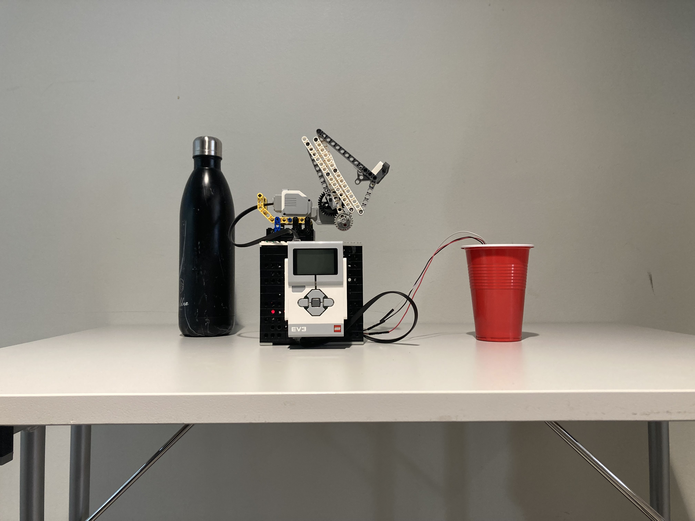
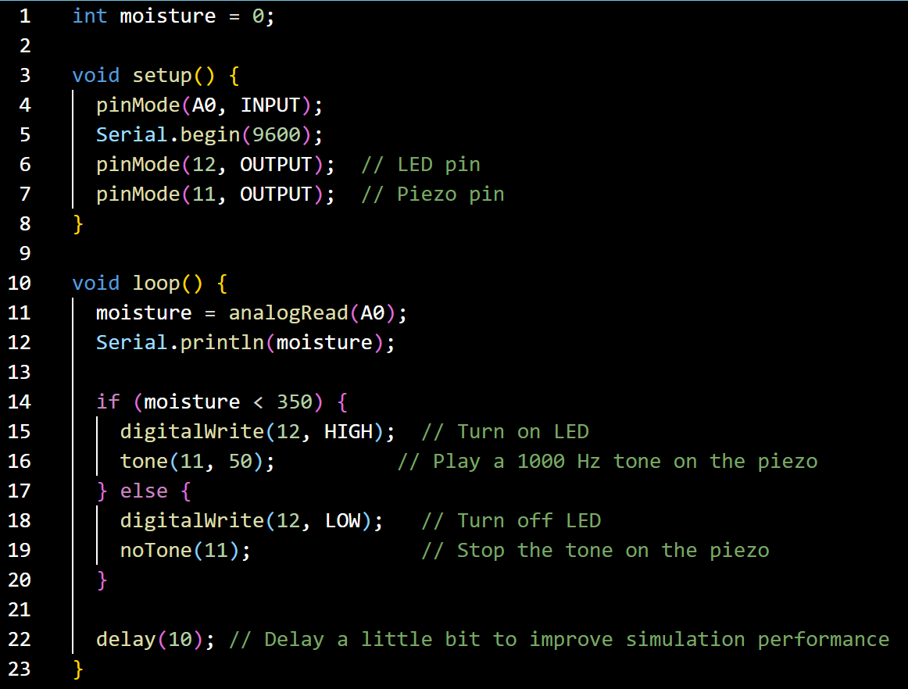

Prosjekter
Lego-rally
Dette var et prosjekt gjennomført i faget IDATT1004. Her konkurrerte jeg og min gruppe med andre grupper i klassen.
Gruppene bygde hver sin legobil som fulgte en svart stripe rundt en bane.
Jeg og min gruppe hadde fri arbeidsflyt, så samtlige i gruppen bidro med både byggingen, kodingen og testingen av vår bil.
Igjennom prosjektet lærte jeg og min gruppe verdien av hyppige møter og strukturert arbeidsflyt.
For at bilen skulle klare skarpe svinger, men samtidig kjøre jevnt brukte vi en PID-algoritme programmert i micropython.
Dette var mitt første møte med å jobbe i team på denne måten, og jeg tok med meg mange vedrifulle lærdommer
om strukturert teamarbeid, kommunikasjon i team og planlegging av prosjekter.
Automatisk vannerobot til planter
 I dette prosjektet fikk jeg og gruppen bestemme selv hvilken robot vi skulle bygge.
Etter brainstorming og anonym avstemning, ble vi enige om å bygge en robot for å automatisk vanne planter.
Arbeidsprosessen startet med at gruppen fytle ut et GANTT-diagram som et utgangspunkt til arbeidsprosessen.
Det ble også oprettet et issueboard på GitLab for å administrere arbeidsoppgavene.
Selve roboten besto av to deler: en forlengbar arm, styrt av en LEGO-EV3, og en arduiono koblet til en fuktsensor for å måle fuktnivå i jorden.
Følgende er koden skrevet i Micropython for armen til roboten:

Dette er koden til den andre delen av roboten, Arduinoen og fuktsensoren, skrevet i C++

Grunnet tidsbegrensninger rakk ikke gruppen få tak i en passende vannpumpe, men testene av roboten virket lovende.
En vannpumpe og vanntank vil enkel kunne kobles til roboten for å gjøre den fullstendig autonom.
Prosjektet ble dokumentert igjennom hele prosessen og dokumentert i en rapport skrevet av gruppen.
Vi tok med oss lærdommen fra rally-prosjektet, og dokumenterte flittig igjennom hele prosjektet.
Øvinger i programmering
Igjennom semesteret har jeg gjennomført 11 øvinger i faget programmering1 IDATT1003. Øvingene besto av blandt annet disse programmene:
- Et register over arrangementer
- Et register over eiendommer
- Et tekstbasert kjøleskap
- Valutta-konverterer
- Program for tekstanalyse
- Program for å regne med matriser
Igjennom dette faget har jeg blitt kjent med grunleggende prinsipper innen OOP og Java. Jeg har også fått kunskap om bruken av GitLab og GitHub, samt å kode i team. Programmet for å simulere kjøleskapet var definitivt det største, og er forstatt under konstruksjon. I dette prosjektet har jeg lært å jobbe i Maven, samt viktigheten av å ha en klar struktur på koden.
Utdanning
- 2024 - Nåværende: Bachelor i Dataingeniør, NTNU Gløshaugen
- 2019 - 2022: Bachelor i Musikkvitenskap, NTNU Dragvoll
Ferdigheter
- HTML & CSS
- JavaScript
- Python
- Java
Kontakt
Du kan kontakte meg via e-post: jostein.rodahl@hotmail.com